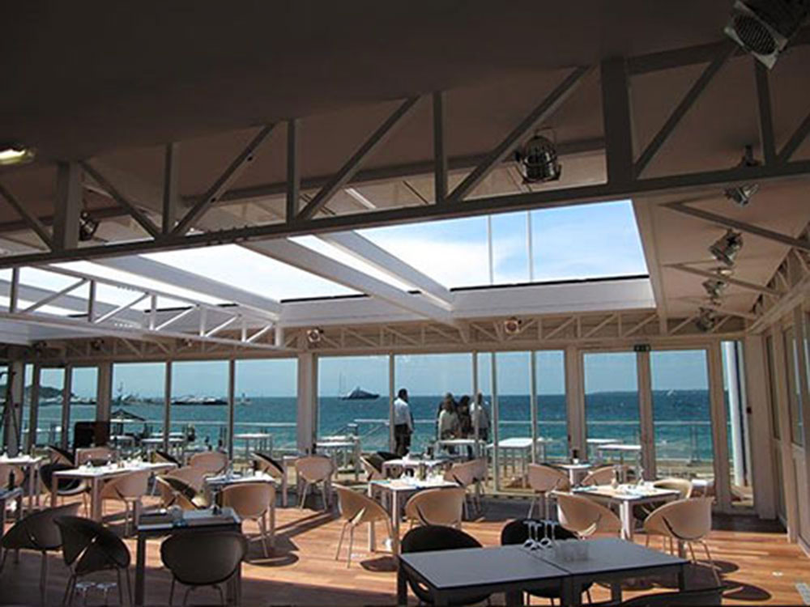
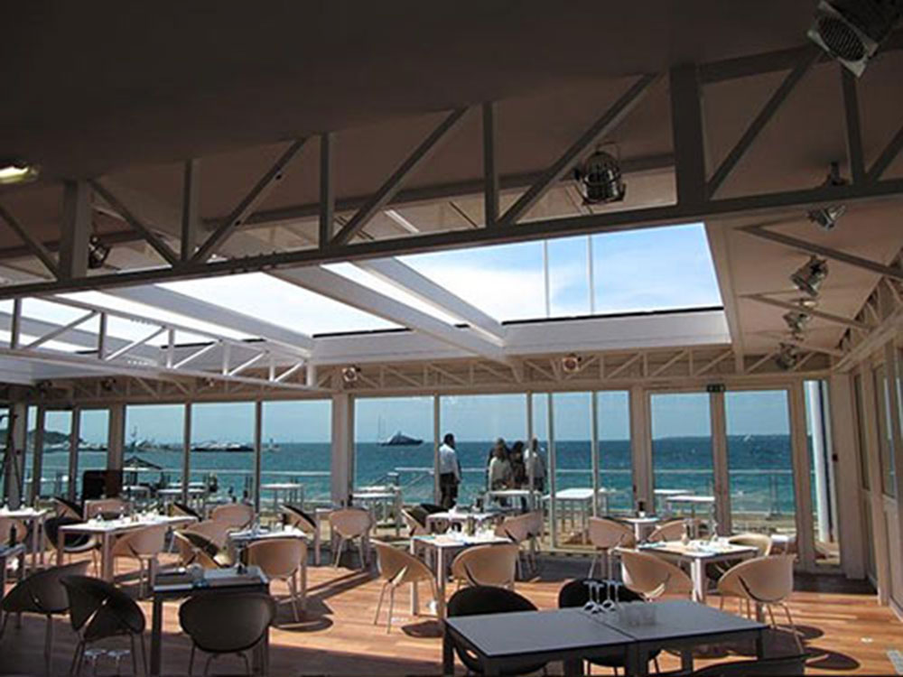
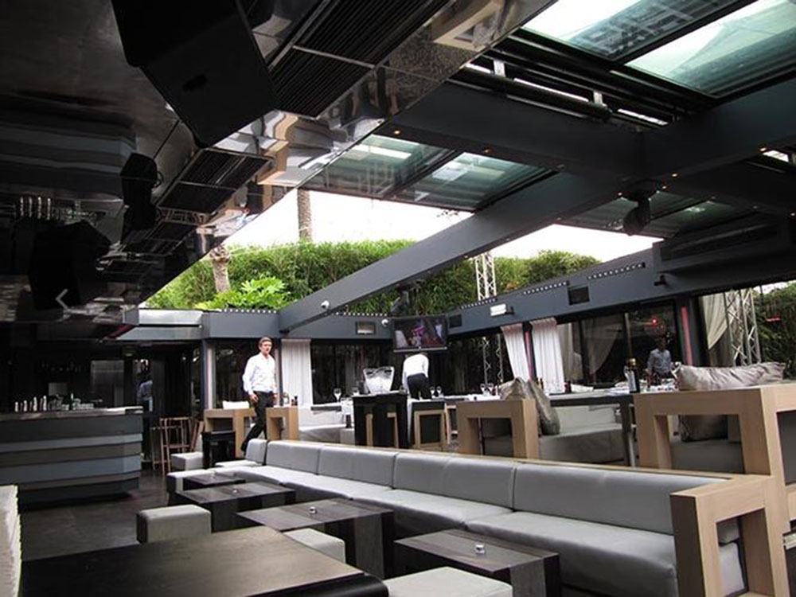
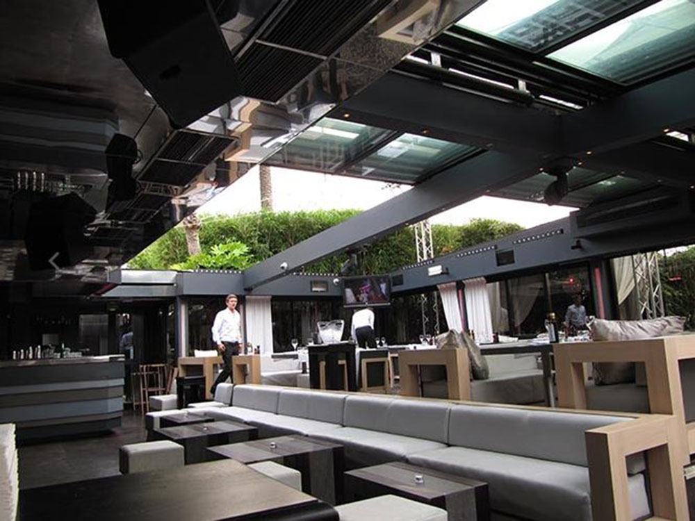
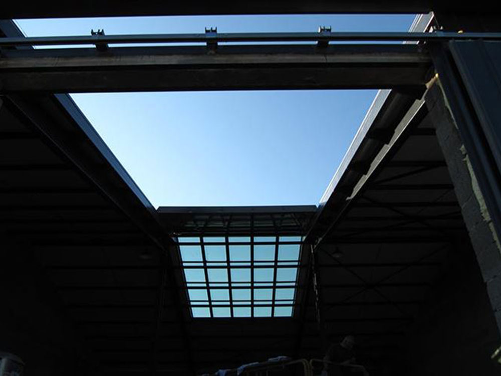
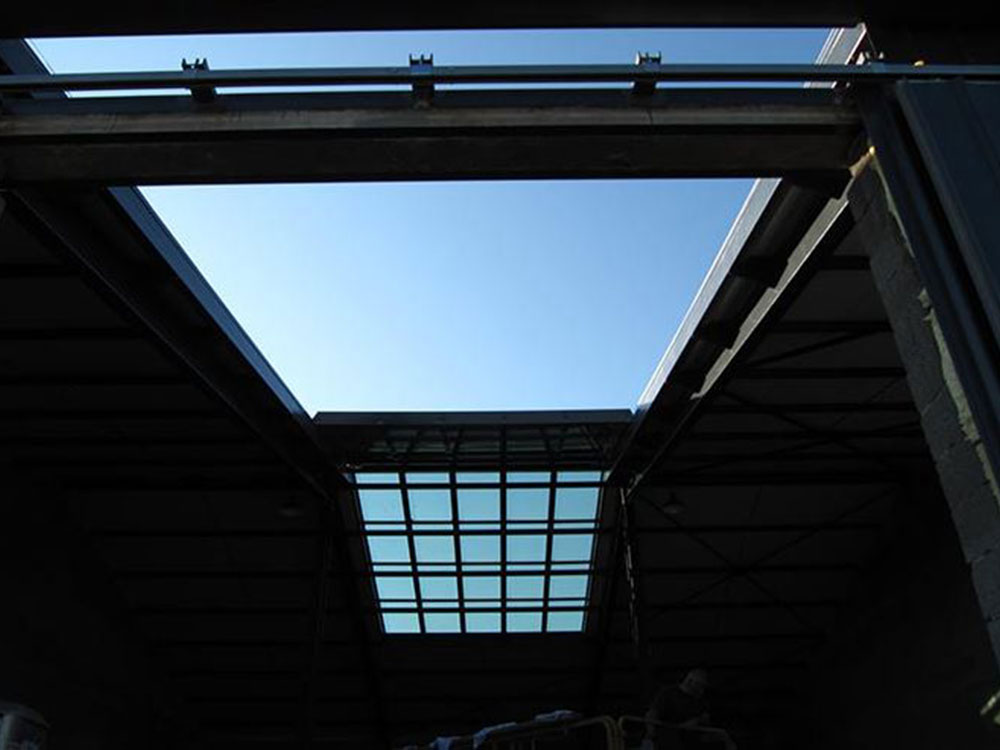

Pour s'offrir la lumière et le ciel, sans aucun obstacle visuel
pensez à la toiture coulissante TOITEL. Elle est la solution idéale, quelle que soit la surface à couvrir.
Contactez-nousUn dégagement partiel ou total
Une ouverture sans obstacles
Une structure porteuse épurée


Restaurant NEW-YORK NEW-YORK à Cannes (06), couverture d'une véranda par verrière coulissante à trois vantaux, surface couverte : 200m².


Restaurant chez BRUNO de Lorgues (83), couverture de la véranda par une toiture coulissante à quatre vantaux, surface couverte : 60m².


Bar de l'Hôtel GRANDS BOULEVARDS (75002), couverture d'une cour par une toiture coulissante à deux pans et à cinq vantaux chacun, refoulement vers le bas, surface couverte : 140m².
 

Restaurant du CASINO PARTOUCHE à Juan les Pins (06), couverture de la salle par une toiture escamotable à quatre vantaux en panneaux sandwichs, surface couverte : 102m².
Restaurant Plage de l'ECRIN (06), toiture coulissante à cinq vantaux sur véranda, surface couverte : 90m².
Restaurant de l'Hôtel MAMA SHELTER Marseille (13), couverture de la salle par une verrière ouvrante à quatre vantaux, surface couverte : 105m².

 


Restaurant du BAOLI (06), couverture de la salle par une verrière coulissante à deux pans et à quatre vantaux chacun, surface couverte : 260m².
Restaurant LE DAVID à Marseille (13), couverture de la salle par une toiture rétractable à deux pans et à quatre vantaux dont un en panneaux sandwichs, surface couverte : 160m².
Piscine publique, création de cinq ouvertures par des toitures coulissantes à quatre vantaux en panneaux polycarbonate, surface couverte : 280m².

 



Création d'un puits de lumière dans un Loft, chez un particulier, installation d'une toiture ouvrante à deux pans et à cinq vantaux chacun, surface couverte : 75m².
Création d'un puits de lumière dans une serre tropicale, chez un particulier, installation d'une toiture ouvrante à deux pans et à cinq vantaux chacun, surface couverte : 250m².